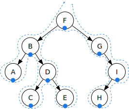
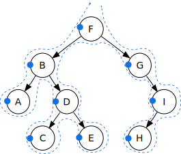
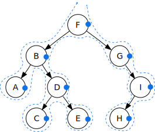
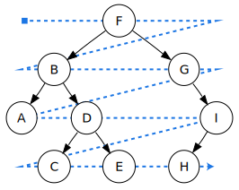

Specifies the type of traversal performed by g_tree_traverse(),
g_node_traverse() and g_node_find().
The different orders are illustrated here:
In order: A, B, C, D, E, F, G, H, I

Pre order: F, B, A, D, C, E, G, I, H

Post order: A, C, E, D, B, H, I, G, F

Level order: F, B, G, A, D, I, C, E, H

.
Members
G_IN_ORDER
Visits a node’s left child first, then the node itself,
then its right child. This is the one to use if you
want the output sorted according to the compare function.
Value: 0
Available since: 2.0
G_PRE_ORDER
Visits a node, then its children.
Value: 1
Available since: 2.0
G_POST_ORDER
Visits the node’s children, then the node itself.
Value: 2
Available since: 2.0
G_LEVEL_ORDER
Is not implemented for
balanced binary trees.
For n-ary trees, it
visits the root node first, then its children, then
its grandchildren, and so on. Note that this is less
efficient than the other orders.